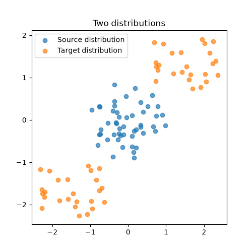
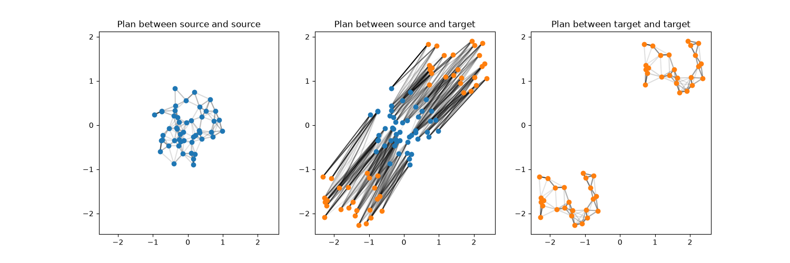
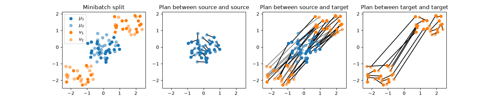
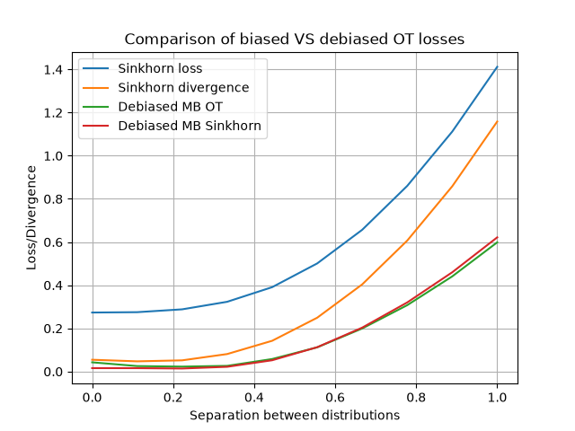

Note
Go to the end to download the full example code.
Sinkhorn Divergence and Debiased OT solvers
This example shows how to use the debiased OT solvers in ot.solve_sample to compute Sinkhorn divergences and debiased Minibatch solutions. The debiased OT solvers can be used with balanced and unbalanced OT problems, and with different regularization types (entropic, L2, group lasso).
# Author: Remi Flamary <remi.flamary@polytechnique.edu>
#
# License: MIT License
# sphinx_gallery_thumbnail_number = 3
import numpy as np
import matplotlib.pylab as pl
import ot
import ot.plot
from ot.datasets import make_1D_gauss as gauss
Generate data
def sample_ball(n, radius=1.0, center=(0.0, 0.0)):
np.random.seed(0)
theta = 2 * np.pi * np.random.rand(n)
r = radius * np.sqrt(np.random.rand(n))
x = r * np.cos(theta) + center[0]
y = r * np.sin(theta) + center[1]
return np.stack((x, y), axis=1)
def sample_two_balls(n, radius=1.0, sep=1):
assert n % 2 == 0, "n must be even"
centers = ((-sep, -sep), (sep, sep))
n_half = n // 2
X1 = sample_ball(n_half, radius, centers[0])
X2 = sample_ball(n_half, radius, centers[1])
perm = np.random.permutation(n_half * 2)
X = np.vstack((X1, X2))
X = X[perm]
return X
n = 50
x1 = sample_ball(n, radius=1.0, center=(0, 0))
x2 = sample_two_balls(n, radius=1.0, sep=1.5)
pl.figure(1, figsize=(5, 5))
pl.scatter(x1[:, 0], x1[:, 1], label="Source distribution", alpha=0.7)
pl.scatter(x2[:, 0], x2[:, 1], label="Target distribution", alpha=0.7)
pl.legend()
pl.title("Two distributions")
ax = pl.axis()

Compute Sinkhorn divergence and visualize plans
The Sinkhorn divergence is computed by setting the debias parameter to True in the ot.solve_sample function. The resulting value is the Sinkhorn divergence. The Sinkhorn divergences is computed as:
The entropic OT plans for each of those terms can be accessed in the log attribute of the result, and can be visualized using the ot.plot.plot2D_samples_mat function.
res = ot.solve_sample(x1, x2, reg=0.1, debias=True)
print("Sinkhorn divergence: ", res.value)
plan_11 = res.log["res_aa"].plan
plan_12 = res.log["res_ab"].plan
plan_22 = res.log["res_bb"].plan
#
pl.figure(2, figsize=(15, 5))
pl.subplot(1, 3, 1)
ot.plot.plot2D_samples_mat(x1, x1, plan_11, thr=0.05)
pl.scatter(x1[:, 0], x1[:, 1], label="Source distribution", zorder=2)
pl.axis(ax)
pl.title("Plan between source and source")
pl.subplot(1, 3, 2)
ot.plot.plot2D_samples_mat(x1, x2, plan_12, thr=0.05)
pl.scatter(x1[:, 0], x1[:, 1], label="Source distribution", zorder=2)
pl.scatter(x2[:, 0], x2[:, 1], label="Target distribution", zorder=2)
pl.axis(ax)
pl.title("Plan between source and target")
pl.subplot(1, 3, 3)
ot.plot.plot2D_samples_mat(x2, x2, plan_22, thr=0.05)
pl.scatter(x2[:, 0], x2[:, 1], label="Target distribution", color="C1", zorder=2)
pl.axis(ax)
pl.title("Plan between target and target")

/home/circleci/project/ot/bregman/_sinkhorn.py:902: UserWarning: Sinkhorn did not converge. You might want to increase the number of iterations `numItermax` or the regularization parameter `reg`.
warnings.warn(
Sinkhorn divergence: 3.1176410736749864
Text(0.5, 1.0, 'Plan between target and target')
Debiased Minibatch OT
Doing OT on minibatches leads to a similar bias than using entropic regularization since the average OT plan is densified due to the stochasticity of the minibatch sampling. On a given minibatch, the debiased loss can be computed by setting the debias parameter to `’split’`that split the data points in each distributions in two and computes the debias OT loss as:
res = ot.solve_sample(x1, x2, debias="split")
print("Debiased minibatch OT loss: ", res.value)
# recover the plans for each of the four terms in the debiased loss
plan_11 = res.log["res_aa"].plan
plan_12 = res.log["res_ab1"].plan
plan_21 = res.log["res_ab2"].plan
plan_22 = res.log["res_bb"].plan
sel_a1 = res.log["sel_a1"]
sel_a2 = res.log["sel_a2"]
sel_b1 = res.log["sel_b1"]
sel_b2 = res.log["sel_b2"]
nb1 = plan_11.shape[0]
nb2 = plan_22.shape[0]
pl.figure(4, figsize=(15, 3))
pl.subplot(1, 4, 1)
pl.scatter(x1[sel_a1, 0], x1[sel_a1, 1], label="$\mu_1$", zorder=2)
pl.scatter(
x1[sel_a2, 0], x1[sel_a2, 1], label=r"$\mu_2$", zorder=2, color="C0", alpha=0.5
)
pl.scatter(x2[sel_b1, 0], x2[sel_b1, 1], label=r"$\nu_1$", zorder=2, color="C1")
pl.scatter(
x2[sel_b2, 0], x2[sel_b2, 1], label=r"$\nu_2$", zorder=2, color="C1", alpha=0.5
)
pl.title("Minibatch split")
pl.axis(ax)
pl.legend()
pl.subplot(1, 4, 2)
ot.plot.plot2D_samples_mat(x1[sel_a1], x1[sel_a2], plan_11, thr=0.05)
pl.scatter(x1[sel_a1, 0], x1[sel_a1, 1], zorder=2)
pl.scatter(
x1[sel_a2, 0],
x1[sel_a2, 1],
zorder=2,
color="C0",
alpha=0.5,
)
pl.axis(ax)
pl.title("Plan between source and source")
pl.subplot(1, 4, 3)
ot.plot.plot2D_samples_mat(x1[sel_a1], x2[sel_b1], plan_12, thr=0.05)
ot.plot.plot2D_samples_mat(x1[sel_a2], x2[sel_b2], plan_21, thr=0.05, alpha=0.5)
pl.scatter(x1[sel_a1, 0], x1[sel_a1, 1], label="Source distribution", zorder=2)
pl.scatter(
x2[sel_b1, 0], x2[sel_b1, 1], label="Target distribution", zorder=2, color="C1"
)
pl.scatter(
x1[sel_a2, 0],
x1[sel_a2, 1],
label="Source distribution",
zorder=2,
color="C0",
alpha=0.5,
)
pl.scatter(
x2[sel_b2, 0],
x2[sel_b2, 1],
label="Target distribution",
zorder=2,
color="C1",
alpha=0.5,
)
pl.axis(ax)
pl.title("Plan between source and target")
pl.subplot(1, 4, 4)
ot.plot.plot2D_samples_mat(x2[sel_b1], x2[sel_b2], plan_22, thr=0.05)
pl.scatter(
x2[sel_b1, 0], x2[sel_b1, 1], label="Target distribution", zorder=2, color="C1"
)
pl.scatter(
x2[sel_b2, 0],
x2[sel_b2, 1],
label="Target distribution",
zorder=2,
color="C1",
alpha=0.5,
)
pl.axis(ax)
pl.title("Plan between target and target")

/home/circleci/project/examples/plot_debias_sink_div.py:148: SyntaxWarning: invalid escape sequence '\m'
pl.scatter(x1[sel_a1, 0], x1[sel_a1, 1], label="$\mu_1$", zorder=2)
Debiased minibatch OT loss: 1.5822357572175718
Text(0.5, 1.0, 'Plan between target and target')
Comparison of the divergences
reg = 0.1
sep_list = np.linspace(0, 1.0, 10)
sink_list = []
sink_div_list = []
ot_mb_list = []
ot_mb_sink_list = []
for sep in sep_list:
x2sep = sample_two_balls(n, radius=1.0, sep=sep)
sink_list.append(
ot.solve_sample(
x1,
x2sep,
reg=reg,
).value
)
sink_div_list.append(ot.solve_sample(x1, x2sep, reg=reg, debias=True).value)
ot_mb_list.append(ot.solve_sample(x1, x2sep, debias="split").value)
ot_mb_sink_list.append(ot.solve_sample(x1, x2sep, reg=1, debias="split").value)
pl.figure(3)
pl.plot(sep_list, sink_list, label="Sinkhorn loss", color="C0")
pl.plot(sep_list, sink_div_list, label="Sinkhorn divergence", color="C1")
pl.plot(sep_list, ot_mb_list, label="Debiased MB OT", color="C2")
pl.plot(sep_list, ot_mb_sink_list, label="Debiased MB Sinkhorn", color="C3")
pl.xlabel("Separation between distributions")
pl.ylabel("Loss/Divergence")
pl.title("Comparison of biased VS debiased OT losses")
pl.grid()
pl.legend()

<matplotlib.legend.Legend object at 0x7697c7c08830>
Total running time of the script: (0 minutes 4.172 seconds)